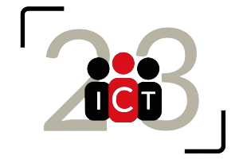

Projects




I began programming the ZÜRI app as my end of school project.
The idea for the app came to me much like the birkin bag did for Jane Mallory Birkin, that is, on a flight from switzerland to england.
The point of tha app was, to make something that would become a mor local and user friendly social media, that would also allow me to set foot in the world of programming.
As I owned an iPhone at the time, I decided that I should program the app in the Swift programming language, as it is a high level language and has a fast compilation time.
I managed to build a basic app within 4 and a half months, just in time to release it to the App Store, the day before the end of school presentations.
Despite a first release which was full of bugs and bottlenecks which would cause the app to crash, it gained around 90 user within its first day, with students and parent alike downloading it through a QR code at my presentation stand.
Over the following weeks i managed to fix all of the bugs, which caused the app to break, leaving only server errors to worsen the user experience, errors which also be fixed within the next three weeks.
I managed to build a basic app within 4 and a half months, just in time to release it to the App Store, the day before the end of school presentations.
In July 2023, in the canton of Zürich, the event known as "Züri Fäscht" (Zurich celecbration) took place, making the keyword "Züri" reach heights i had never expected.
That along with the newly created "Züri Fäscht App", led to multiple people accidentally downloading ZÜRI, a completely unexpected amount of growth, which proved a fatal amount of traffic to the ZÜRI Servers.
A next day fix however, along with an upgrade to the server plan, allowed ZÜRI to operate as usual.
I began programming the ZÜRI app as my end of school project.